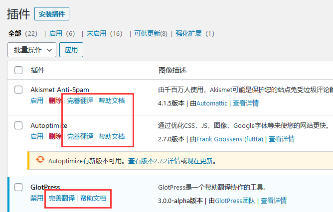

WordPress自动化翻译系统(v0.0.1 beta) | 交流/反馈QQ群：1046115671
关于
WordPress自动化翻译系统是WP中国本土化项目(WP-China.Org)的一部分，该系统将分两支，一支与WP中国本土仓库结合，为国内用户提供官方仓库的完整汉化支持，另一支独立为网页版，供制作高质量商业翻译包的用户免费使用。
WP中国本土化项目顾名思义就是一个围绕WordPress在中国的本土化进程来开展工作的项目，这是一个为国内WordPress生态的基础设施建设服务的项目，其组织形式为：开源|公益|中立。
其目标是做大国内WordPress市场蛋糕，让开发者有更多的用户群体，让用户有更多优质的软件生态和更好用的WordPress。
项目计划组建一个本土化工作小组/社区，联合国内WordPress生态中知名大佬共同倡议发起，以机器自动化翻译+志愿者人工校准+自动化上架推送的方式提供WordPress官方仓库、插件/主题帮助文档等的完整汉化支持，并通过WP-China-Yes插件及开放给开发者们集成的SDK等方式将成果接入到终端用户的站点中。
未来期望达成的形式是为每个插件/主题添加"完善翻译"，点击后跳转到"翻译协同平台（建设中）"上该包对应的翻译界面，引导用户参与校准，经管理员审核通过后自动全网推送并自动加入翻译记忆库，日后机翻时优先从记忆库调取。同时为每个插件/主题添加"帮助文档"，点击后跳转到国内的"WP生态wiki（建设中）"，允许用户查阅汉化后的帮助文档并引导用户参与文档校准。
效果图如下所示：

WordPress自动化翻译系统版权所有：WP-China.Org，项目交流群：1046115671
使用帮助
-
点击"浏览"按钮，选择要汉化的包
-
点击"开始翻译"按钮，上传包到服务器并开始翻译
-
翻译时服务器端程序的输出会显示在"终端回显"区块内
-
翻译结束后在终端回显区块的末尾会生成汉化包的下载地址
-
将下载下来的汉化包解压上传到"WordPress安装目录/wp-content/languages/plugins/"中即可
终端回显：